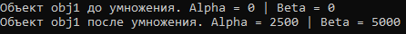
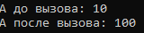
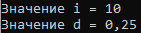
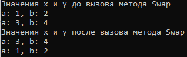

Передача параметров по ссылке (ref и out)
Передача объектов методом по ссылке
class MyClass
{
public int alpha, beta;
public MyClass(int i, int j)
{
alpha = i;
beta = j;
}
public void Multiplication(MyClass obj)
{
obj.alpha = alpha * 100;
obj.beta = beta * 100;
}
}
class TestObj
{
public static void Test()
{
MyClass obj1 = new MyClass(0, 0);
MyClass obj2 = new MyClass(25, 50);
Console.WriteLine("Объект obj1 до умножения. Alpha = " + obj1.alpha + " | Beta = " + obj1.beta);
obj2.Multiplication(obj1);
Console.WriteLine("Объект obj1 после умножения. Alpha = " + obj1.alpha + " | Beta = " + obj1.beta);
}
}
Объект передается по ссылки и его данные можно изменять
В результате:

Использование модификаторов параметров ref и out
Модификатор параметра ref - принудительно организует вызов по ссылке.
class RefTest
{
public void Sqr(ref int i)
{
i = i * i;
}
}
class RefDemo
{
public static void demo()
{
int a = 10;
Console.WriteLine("A до вызова: " + a);
RefTest test = new RefTest();
test.Sqr(ref a);
Console.WriteLine("A после вызова: " + a);
}
}
Переменная передается по ссылки и её данные можно изменять
В результате:

Модификатор параметра out - подобен модификатору ref, за одним исключением: он служит только для передачи значения за пределы метода.
class OutTest
{
public int GetParts(double n, out double frac)
{
int whole;
whole = (int) n;
frac = n - whole;
return whole;
}
}
class OutDemo
{
public static void demo()
{
OutTest test = new OutTest();
int i;
double d;
i = test.GetParts(10.25, out d);
Console.WriteLine("Значение i = " + i);
Console.WriteLine("Значение d = " + d);
}
}
В результате выполнения метод GetParts вернул два значения
В результате:

Использование модификаторов ref и out для ссылки на объекты
class RefSwap
{
int a, b;
public RefSwap(int i, int j)
{
a = i;
b = j;
}
public void Show()
{
Console.WriteLine("a: {0}, b: {1}", a, b);
}
public void Swap(ref RefSwap obj1, ref RefSwap obj2)
{
RefSwap t;
t = obj1;
obj1 = obj2;
obj2 = t;
}
}
class RefSwapDemo
{
public static void demo()
{
RefSwap x = new RefSwap(1, 2);
RefSwap y = new RefSwap(3, 4);
Console.WriteLine("Значения x и y до вызова метода Swap");
x.Show();
y.Show();
Console.WriteLine("Значения x и y после вызова метода Swap");
x.Swap(ref x, ref y);
x.Show();
y.Show();
}
}
В результате объекты поменяются данными

Created with the Personal Edition of HelpNDoc: Easy to use tool to create HTML Help files and Help web sites